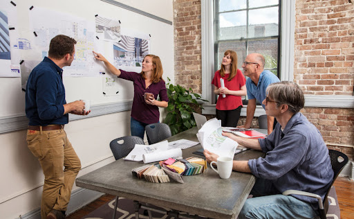
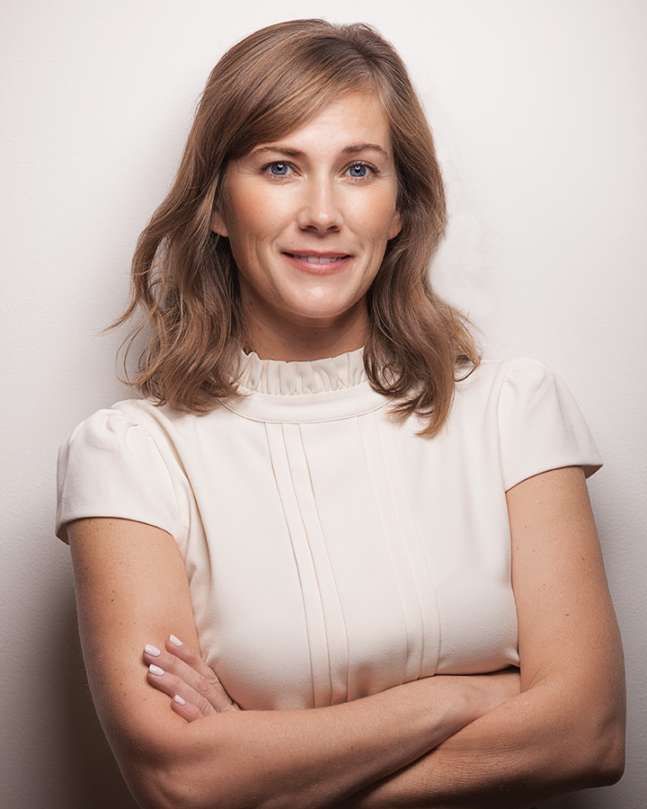

ABOUT US
Hello! We are Dream House. Architecture Studio from USA
Dream House Architecture was founded in 1994 with a commitment to making places better to live. We believe that architecture and design matter, and that through our work, we can make a positive difference in the world. We strive to create buildings that are not just things in themselves, but serve as catalysts for positive urban and social change.
With our integrated team of architects, interior designers, planners and engineers, we advocate for the people who are served by the spaces we design. We engage with our clients on a personal level, as both institutions and people, so we can help them do better what they do best.

PROFESSIONAL TEAM
Meet our head team:

